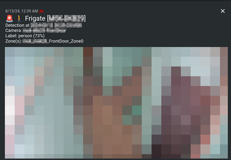

模板
Frigate-Notify-Plus 允许使用 Golang 文本模板自定义某些配置值。目前模板可用于通知标题、通知消息和 HTTP 请求头。
模板存放位置
三个消息模板以出厂默认形式内嵌在二进制中。当你在 Web UI 中编辑它们时，编辑后的文件会写入 $DATA_DIR/templates/（每个模板一个文件：plaintext.template、markdown.template、html.template），并在容器重建后保留，与 config.yml 和日志一样。磁盘上的模板文件始终优先于内嵌副本；删除它即可恢复出厂默认。没有数据目录时（旧式本地运行），编辑结果会写入工作目录旁边的 templates/ 目录。
Note
在此版本之前通过 Web UI 编辑的模板被写入旧容器内的 /app/templates，不会自动迁移。如果旧容器还在，把它的 /app/templates/*.template 文件复制到你的数据目录的 templates/ 文件夹中（或在 Web UI 中重新应用这些编辑）。
通知模板
可以通过配置任何通知渠道的 template 部分来定义自定义消息模板。
默认情况下，Frigate-Notify-Plus 内置了几个用于构建通知消息的模板：HTML、Plaintext、Markdown 和 JSON。这些模板的消息内容相同，只是针对不同通知渠道采用了不同格式。在定义你自己的自定义模板时，参考它们可能会有帮助。
可以使用变量创建自定义消息，填入事件的详细信息。任何变量都可以用以下语法插入：{{ .VariableName }}。例如，相机名称可以用 {{ .Camera }} 插入。
定义自定义模板时，可以配置为单行：
alerts:
discord:
enabled: true
webhook: # Webhook URL
template: "Looks like {{ .Camera }} spotted a {{ .Label }}!!"
也可以配置为多行：
alerts:
discord:
enabled: true
webhook: # Webhook URL
template: |
{{ .Camera }} spotted something!
The camera seems to think it found a {{ .Label }} 🤔
如果任何通知渠道下的 template 配置缺失或为空，将使用默认模板。
Warning
如果你的模板以变量开头——建议把单行模板用引号（""）括起来，或使用多行写法。否则加载配置文件时可能会出错。
也就是说，不要写 template: {{ .Camera }} alert!，而要写 template: "{{ .Camera }} alert!"
标题模板
模板变量也可以用来设置通知标题或主题行。
例如，下面的 title 模板包含相机和标签信息。如果相机 front_door 检测到一只 dog，通知标题将被设为：Frigate - front_door detected dog
...
alerts:
general:
title: Frigate - {{ .Camera }} detected {{ .Label }}
...
请求头模板
对于支持发送自定义 HTTP 请求头的通知方式，这些请求头也可以用与上面相同的语法通过变量定义。这样可以实现一些有趣的自定义行为。此外，请求头可以从环境变量加载数据，用于填充 Authorization 请求头等敏感信息。
例如，下面演示了如何根据事件特征改变 Ntfy 通知：
...
headers:
- Authorization: Basic {{ env.Getenv "FN_NTFY_AUTH_BASIC" }}
- X-Priority: "{{ if ge (len .Zones ) 1 }} 4{{ else }} 3{{ end }}"
- X-Tags: "{{ if ge (len .Zones ) 1 }} rotating_light, {{ end }}walking"
...
上面的请求头包含一个从环境变量获取的 Authorization 令牌。它们还会根据被检测对象是否位于某个区域内，修改 Ntfy 通知的优先级和标签。
让我们通过下面的示例通知截图看看实际效果。在人员进入区域之前，发送的 Ntfy 通知使用默认优先级（3）和一个步行小人 emoji。然而，一旦该人员进入某个区域，通知会变为高优先级（4），并包含一个 rotating_light emoji 来引起注意。
| 对象进入区域之前 | 对象进入区域之后 |
|---|---|
 |
 |
可用变量
下面的列表并不包含所有可能的变量，只是几个最常用的。大多数来自从 Frigate 收到的事件载荷，但也额外添加了一些，帮助你更方便地构建模板。
Info
如果你已经熟悉 Golang 模板，可以看看 event.go。从 Frigate 收到的事件会被解析到 Event 结构体中，因此其中任何字段都可以在通知里使用。请注意，该结构体是 Web API 与 MQTT 两种载荷可能字段的合并列表，两者略有不同。因此有些字段可能只有在使用 Web API 事件获取方式时才可用。
| 变量名 | 说明 |
|---|---|
| .Camera | 相机名称 |
| .HasClip | 如果有视频片段可用，报告 true |
| .HasSnapshot | 如果有快照可用，报告 true |
| .ID | Frigate 事件 ID |
| .Label | 被检测对象的标签 |
| .StartTime | 事件开始的 Unix 时间戳 |
| .EndTime | 事件结束的 Unix 时间戳 |
| .Extra.FormattedTime | 转换并格式化后的事件开始时间戳 （如果指定了，使用 alerts > general > timeformat 配置项） |
| .Extra.UnixStartTime | 事件开始时间的 Unix 时间戳 |
| .Extra.CameraName | 相机名称的首字母大写形式（例如 "side_door" 变为 "Side Door"） |
| .Extra.TopScorePercent | 对象检测标签的置信度百分比 |
| .Extra.ZoneList | 对象当前所在区域的列表 |
| .Extra.LocalURL | frigate > server 下指定的 Frigate 服务器 URL |
| .Extra.PublicURL | frigate > public_url 下指定的 Frigate 公共 URL |
| .Extra.EventLink | 直接指向事件视频片段的链接 |
| .Extra.ReviewLink | 直接指向审查条目的链接（当 MQTT mode 为 reviews 时） |
| .Extra.GenAITitle | GenAI 为事件生成的标题（例如 "Person approaching front door"） |
| .Extra.GenAISummary | GenAI 为事件生成的简短总结 |
| .Extra.GenAIScene | GenAI 生成的详细场景叙述 |
| .Extra.GenAIThreatLevel | GenAI 威胁评估："Normal"、"Suspicious" 或 "Critical"（Frigate 的 potential_threat_level 0、1、2） |
| .Extra.GenAIConcerns | GenAI 识别出的关注点，逗号分隔 |
| .Extra.GenAIConfidence | GenAI 置信度百分比（例如 "85%"） |
| .Extra.GenAIObservations | GenAI 按时间顺序的观察记录，为句子列表（Frigate 0.18+）。用 {{ range .Extra.GenAIObservations }}- {{ . }}\n{{ end }} 迭代 |
| .Extra.Description | GenAI 生成的对象描述 |
Note
GenAI 变量只有当 Frigate 配置了 GenAI 且事件有可用的 GenAI 元数据时才会被填充。没有 GenAI 数据时，这些变量为空字符串。使用条件模板逻辑（例如 {{ if ge (len .Extra.GenAITitle) 1 }}...{{ end }}）来优雅地处理这种情况。
Note
默认的 Telegram 通知会在 GenAI 更新编辑已发送的消息时，把 .Extra.GenAIObservations 作为项目符号时间线附加在后面。自定义模板按原样渲染，所以如果你想要这条时间线，需要自己把该变量包含进去。
环境变量
模板还可以使用内置的 env 函数从环境变量获取值。在模板中使用的环境变量必须包含 FN_ 前缀。
例如，把一个认证令牌存放在环境变量中：
...
headers:
- Authorization: Basic {{ env "FN_AUTH_BASIC" }}
...